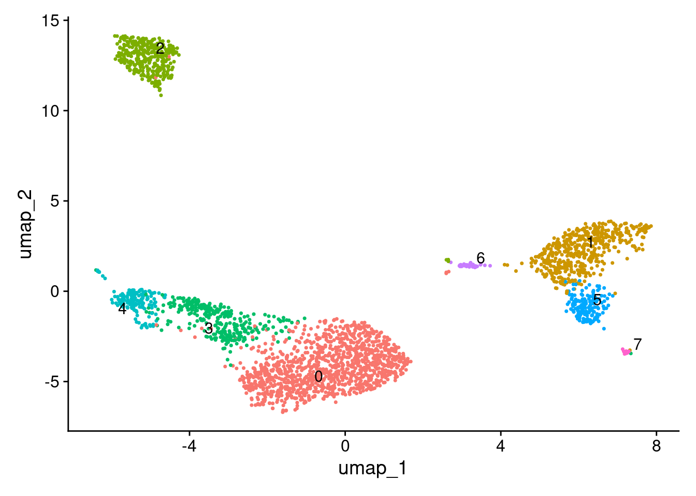
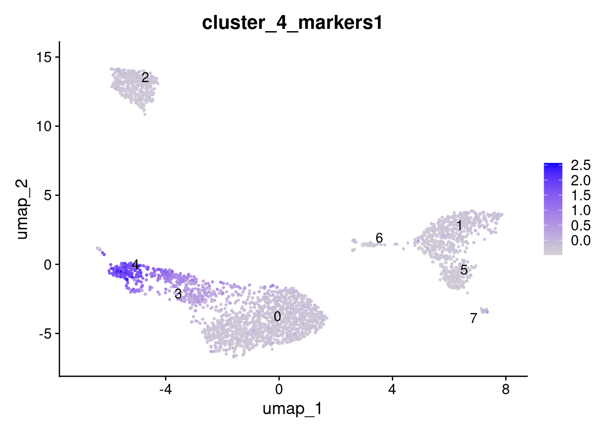
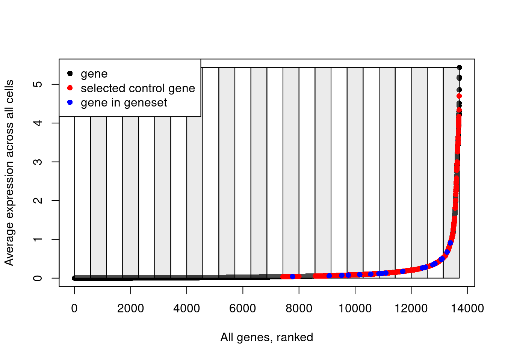

Last updated: 2025-02-19
Checks: 7 0
Knit directory: muse/
This reproducible R Markdown analysis was created with workflowr (version 1.7.1). The Checks tab describes the reproducibility checks that were applied when the results were created. The Past versions tab lists the development history.
Great! Since the R Markdown file has been committed to the Git repository, you know the exact version of the code that produced these results.
Great job! The global environment was empty. Objects defined in the global environment can affect the analysis in your R Markdown file in unknown ways. For reproduciblity it’s best to always run the code in an empty environment.
The command set.seed(20200712) was run prior to running
the code in the R Markdown file. Setting a seed ensures that any results
that rely on randomness, e.g. subsampling or permutations, are
reproducible.
Great job! Recording the operating system, R version, and package versions is critical for reproducibility.
Nice! There were no cached chunks for this analysis, so you can be confident that you successfully produced the results during this run.
Great job! Using relative paths to the files within your workflowr project makes it easier to run your code on other machines.
Great! You are using Git for version control. Tracking code development and connecting the code version to the results is critical for reproducibility.
The results in this page were generated with repository version 55128f2. See the Past versions tab to see a history of the changes made to the R Markdown and HTML files.
Note that you need to be careful to ensure that all relevant files for
the analysis have been committed to Git prior to generating the results
(you can use wflow_publish or
wflow_git_commit). workflowr only checks the R Markdown
file, but you know if there are other scripts or data files that it
depends on. Below is the status of the Git repository when the results
were generated:
Ignored files:
Ignored: .Rproj.user/
Ignored: data/1M_neurons_filtered_gene_bc_matrices_h5.h5
Ignored: data/293t/
Ignored: data/293t_3t3_filtered_gene_bc_matrices.tar.gz
Ignored: data/293t_filtered_gene_bc_matrices.tar.gz
Ignored: data/5k_Human_Donor1_PBMC_3p_gem-x_5k_Human_Donor1_PBMC_3p_gem-x_count_sample_filtered_feature_bc_matrix.h5
Ignored: data/5k_Human_Donor2_PBMC_3p_gem-x_5k_Human_Donor2_PBMC_3p_gem-x_count_sample_filtered_feature_bc_matrix.h5
Ignored: data/5k_Human_Donor3_PBMC_3p_gem-x_5k_Human_Donor3_PBMC_3p_gem-x_count_sample_filtered_feature_bc_matrix.h5
Ignored: data/5k_Human_Donor4_PBMC_3p_gem-x_5k_Human_Donor4_PBMC_3p_gem-x_count_sample_filtered_feature_bc_matrix.h5
Ignored: data/Parent_SC3v3_Human_Glioblastoma_filtered_feature_bc_matrix.tar.gz
Ignored: data/brain_counts/
Ignored: data/cl.obo
Ignored: data/cl.owl
Ignored: data/jurkat/
Ignored: data/jurkat:293t_50:50_filtered_gene_bc_matrices.tar.gz
Ignored: data/jurkat_293t/
Ignored: data/jurkat_filtered_gene_bc_matrices.tar.gz
Ignored: data/pbmc3k/
Ignored: data/pbmc4k_filtered_gene_bc_matrices.tar.gz
Ignored: data/refdata-gex-GRCh38-2020-A.tar.gz
Ignored: data/seurat_1m_neuron.rds
Ignored: data/t_3k_filtered_gene_bc_matrices.tar.gz
Ignored: r_packages_4.4.1/
Note that any generated files, e.g. HTML, png, CSS, etc., are not included in this status report because it is ok for generated content to have uncommitted changes.
These are the previous versions of the repository in which changes were
made to the R Markdown (analysis/add_module_score.Rmd) and
HTML (docs/add_module_score.html) files. If you’ve
configured a remote Git repository (see ?wflow_git_remote),
click on the hyperlinks in the table below to view the files as they
were in that past version.
| File | Version | Author | Date | Message |
|---|---|---|---|---|
| Rmd | 55128f2 | Dave Tang | 2025-02-19 | Seurat’s add module score |
A bastardisation of Walter Muskovic’s blog post Seurat’s AddModuleScore function (my apologies).
Load packages.
suppressPackageStartupMessages(library("Seurat"))
suppressPackageStartupMessages(library("ggplot2"))Download the Peripheral Blood Mononuclear Cells (PBMCs) 2,700 cells dataset.
mkdir -p data/pbmc3k && cd data/pbmc3k
wget -c https://s3-us-west-2.amazonaws.com/10x.files/samples/cell/pbmc3k/pbmc3k_filtered_gene_bc_matrices.tar.gz
tar -xzf pbmc3k_filtered_gene_bc_matrices.tar.gzCreate Seurat object.
work_dir <- rprojroot::find_rstudio_root_file()
data_dir <- paste0(work_dir, "/data/pbmc3k/filtered_gene_bc_matrices/hg19/")
stopifnot(dir.exists(data_dir))
pbmc.data <- Read10X(
data.dir = data_dir
)
seurat_obj <- CreateSeuratObject(
counts = pbmc.data,
min.cells = 3,
min.features = 200,
project = "pbmc3k"
)Warning: Feature names cannot have underscores ('_'), replacing with dashes
('-')debug_flag <- FALSE
seurat_obj <- NormalizeData(seurat_obj, normalization.method = "LogNormalize", scale.factor = 1e4, verbose = debug_flag)
seurat_obj <- FindVariableFeatures(seurat_obj, selection.method = 'vst', nfeatures = 2000, verbose = debug_flag)
seurat_obj <- ScaleData(seurat_obj, verbose = debug_flag)
seurat_obj <- RunPCA(seurat_obj, verbose = debug_flag)
seurat_obj <- RunUMAP(seurat_obj, dims = 1:30, verbose = debug_flag)Warning: The default method for RunUMAP has changed from calling Python UMAP via reticulate to the R-native UWOT using the cosine metric
To use Python UMAP via reticulate, set umap.method to 'umap-learn' and metric to 'correlation'
This message will be shown once per sessionseurat_obj <- FindNeighbors(seurat_obj, dims = 1:30, verbose = debug_flag)
seurat_obj <- FindClusters(seurat_obj, resolution = 0.5, verbose = debug_flag)
seurat_objAn object of class Seurat
13714 features across 2700 samples within 1 assay
Active assay: RNA (13714 features, 2000 variable features)
3 layers present: counts, data, scale.data
2 dimensional reductions calculated: pca, umapUMAP.
DimPlot(seurat_obj, label = TRUE, repel = TRUE) + NoLegend()
Get top 20 genes enriched in cluster 4.
FindMarkers(seurat_obj, ident.1 = "4", verbose = FALSE) |>
tibble::rownames_to_column(var = "gene_symbol") |>
head(20) |>
dplyr::pull(gene_symbol) -> cluster_4_markersAdd module score; it is very important that features are provided as a list.
AddModuleScore(
seurat_obj,
features = list(cluster_4_markers),
name = "cluster_4_markers"
) -> seurat_obj
FeaturePlot(
seurat_obj,
features = "cluster_4_markers1",
label = TRUE,
repel = TRUE
)
Details of method in the supplementary materials:
Implementation in Seurat.
object <- seurat_obj
features <- list(cluster_4_markers)
pool <- rownames(seurat_obj)
nbin <- 24
ctrl <- 100
k <- FALSE
name = "cluster_4_markers"
seed = 1
# Find how many gene lists were provided. In this case just one.
cluster.length <- length(x = features)
cluster.length[1] 1# Pull the expression data from the provided Seurat object
# uses DefaultAssay()
# default is the data layer, by order
assay.data <- GetAssayData(object = object)
class(assay.data)[1] "dgCMatrix"
attr(,"package")
[1] "Matrix"# For all genes, get the average expression across all cells (named vector)
data.avg <- Matrix::rowMeans(x = assay.data[pool, ])
length(data.avg)[1] 13714# Order genes from lowest average expression to highest average expression
data.avg <- data.avg[order(data.avg)]
# Use ggplot2's cut_number function to make n groups with (approximately) equal numbers of observations.
# The 'rnorm(n = length(data.avg))/1e+30' part adds a tiny bit of noise to the data, presumably to break ties.
# similar to base R's cut function
data.cut <- ggplot2::cut_number(
x = data.avg + rnorm(n = length(data.avg))/1e+30,
n = nbin,
labels = FALSE,
right = FALSE
)
table(data.cut)data.cut
1 2 3 4 5 6 7 8 9 10 11 12 13 14 15 16 17 18 19 20
572 571 572 571 571 572 571 571 572 571 572 571 571 572 571 571 572 571 572 571
21 22 23 24
571 572 571 572 # Set the names of the cuts as the gene names
names(x = data.cut) <- names(x = data.avg)
head(data.cut) CDC6 SHCBP1 VPREB1 ESCO2 LHFP PBK
1 1 1 1 1 1 # Create an empty list the same length as the number of input gene sets. This will contain the names of the control genes
ctrl.use <- vector(mode = "list", length = cluster.length)
length(ctrl.use)[1] 1# For each of the input gene lists:
for (i in 1:cluster.length) {
# Get the gene names from the input gene set as a character vector
features.use <- features[[i]]
# Loop through the provided genes (1:num_genes) and for each gene, find ctrl (default=100) genes from the same expression bin (by looking in data.cut):
for (j in 1:length(x = features.use)) {
# Within this loop, 'data.cut[features.use[j]]' gives us the expression bin number. We then sample `ctrl` genes from that bin without replacement and add the gene names to ctrl.use.
ctrl.use[[i]] <- c(
ctrl.use[[i]],
names(x = sample(
x = data.cut[which(x = data.cut == data.cut[features.use[j]])],
size = ctrl,
replace = FALSE)
)
)
}
}
# Have a quick look at what's in ctrl.use:
class(ctrl.use)[1] "list"length(ctrl.use)[1] 1class(ctrl.use[[1]])[1] "character"# There should be length(features.use)*ctrl genes (i.e. 20*100):
length(ctrl.use[[1]])[1] 2000Explanatory plot.
# Plot the bins that have been created to split genes based on their average expression
plot(data.avg, pch=16, ylab="Average expression across all cells", xlab="All genes, ranked")
for(i in unique(data.cut)){
cut_pos <- which(data.cut==i)
if(i%%2==0){
rect(xleft = cut_pos[1], ybottom = min(data.avg), xright = cut_pos[length(cut_pos)], ytop = max(data.avg), col=scales::alpha("grey", 0.3))
} else {
rect(xleft = cut_pos[1], ybottom = min(data.avg), xright = cut_pos[length(cut_pos)], ytop = max(data.avg), col=scales::alpha("white", 0.3))
}
}
# Add red points for selected control genes
points(which(names(data.avg)%in%ctrl.use[[1]]), data.avg[which(names(data.avg)%in%ctrl.use[[1]])], pch=16, col="red")
# Add blue points for genes in the input gene list
points(which(names(data.avg)%in%features[[1]]), data.avg[which(names(data.avg)%in%features[[1]])], pch=16, col="blue")
# Add a legend
legend(x = "topleft",
legend = c("gene", "selected control gene", "gene in geneset"),
col = c("black", "red", "blue"),
pch = 16)
Note how control genes are only selected from the bins in which the genes in our input list fall.
# Remove any repeated gene names - even though we set replace=FALSE when we sampled genes from the same expression bin, there may be more than two genes in our input gene list that fall in the same expression bin, so we can end up sampling the same gene more than once.
ctrl.use <- lapply(X = ctrl.use, FUN = unique)
## Get control gene scores
# Create an empty matrix with dimensions;
# number of rows equal to the number of gene sets (just one here)
# number of columns equal to number of cells in input Seurat object
ctrl.scores <- matrix(data = numeric(length = 1L),
nrow = length(x = ctrl.use),
ncol = ncol(x = object))
# Loop through each provided gene set and add to the empty matrix the mean expression of the control genes in each cell
for (i in 1:length(ctrl.use)) {
# Get control gene names as a vector
features.use <- ctrl.use[[i]]
# For each cell, calculate the mean expression of *all* of the control genes
ctrl.scores[i, ] <- Matrix::colMeans(x = assay.data[features.use,])
}
## Get scores for input gene sets
# Similar to the above, create an empty matrix
features.scores <- matrix(data = numeric(length = 1L),
nrow = cluster.length,
ncol = ncol(x = object))
# Loop through input gene sets and calculate the mean expression of these genes for each cell
for (i in 1:cluster.length) {
features.use <- features[[i]]
data.use <- assay.data[features.use, , drop = FALSE]
features.scores[i, ] <- Matrix::colMeans(x = data.use)
}Now we have two matrices;
ctrl.scores - contains the mean expression of the
control genes for each cellfeatures.scores - contains the mean expression of the
genes in the input gene set for each cell# Subtract the control scores from the feature scores - the idea is that if there is no enrichment of the genes in the geneset in a cell, then the result of this subtraction should be ~ 0
features.scores.use <- features.scores - ctrl.scores
# Name the result the "name" variable + whatever the position the geneset was in the input list, e.g. "Cluster1"
rownames(x = features.scores.use) <- paste0(name, 1:cluster.length)
# Change the matrix from wide to long
features.scores.use <- as.data.frame(x = t(x = features.scores.use))
# Give the rows of the matrix, the names of the cells
rownames(x = features.scores.use) <- colnames(x = object)
# Add the result as a metadata column to the input Seurat object
object[[colnames(x = features.scores.use)]] <- features.scores.use
# Voila!
FeaturePlot(object, features = "cluster_4_markers1")
sessionInfo()R version 4.4.1 (2024-06-14)
Platform: x86_64-pc-linux-gnu
Running under: Ubuntu 22.04.5 LTS
Matrix products: default
BLAS: /usr/lib/x86_64-linux-gnu/openblas-pthread/libblas.so.3
LAPACK: /usr/lib/x86_64-linux-gnu/openblas-pthread/libopenblasp-r0.3.20.so; LAPACK version 3.10.0
locale:
[1] LC_CTYPE=en_US.UTF-8 LC_NUMERIC=C
[3] LC_TIME=en_US.UTF-8 LC_COLLATE=en_US.UTF-8
[5] LC_MONETARY=en_US.UTF-8 LC_MESSAGES=en_US.UTF-8
[7] LC_PAPER=en_US.UTF-8 LC_NAME=C
[9] LC_ADDRESS=C LC_TELEPHONE=C
[11] LC_MEASUREMENT=en_US.UTF-8 LC_IDENTIFICATION=C
time zone: Etc/UTC
tzcode source: system (glibc)
attached base packages:
[1] stats graphics grDevices utils datasets methods base
other attached packages:
[1] ggplot2_3.5.1 Seurat_5.1.0 SeuratObject_5.0.2 sp_2.1-4
[5] workflowr_1.7.1
loaded via a namespace (and not attached):
[1] RColorBrewer_1.1-3 rstudioapi_0.17.1 jsonlite_1.8.9
[4] magrittr_2.0.3 spatstat.utils_3.1-0 farver_2.1.2
[7] rmarkdown_2.28 fs_1.6.4 vctrs_0.6.5
[10] ROCR_1.0-11 spatstat.explore_3.3-3 htmltools_0.5.8.1
[13] sass_0.4.9 sctransform_0.4.1 parallelly_1.38.0
[16] KernSmooth_2.23-24 bslib_0.8.0 htmlwidgets_1.6.4
[19] ica_1.0-3 plyr_1.8.9 plotly_4.10.4
[22] zoo_1.8-12 cachem_1.1.0 whisker_0.4.1
[25] igraph_2.1.1 mime_0.12 lifecycle_1.0.4
[28] pkgconfig_2.0.3 Matrix_1.7-0 R6_2.5.1
[31] fastmap_1.2.0 fitdistrplus_1.2-1 future_1.34.0
[34] shiny_1.9.1 digest_0.6.37 colorspace_2.1-1
[37] patchwork_1.3.0 ps_1.8.1 rprojroot_2.0.4
[40] tensor_1.5 RSpectra_0.16-2 irlba_2.3.5.1
[43] labeling_0.4.3 progressr_0.15.0 fansi_1.0.6
[46] spatstat.sparse_3.1-0 httr_1.4.7 polyclip_1.10-7
[49] abind_1.4-8 compiler_4.4.1 withr_3.0.2
[52] fastDummies_1.7.4 highr_0.11 R.utils_2.12.3
[55] MASS_7.3-60.2 tools_4.4.1 lmtest_0.9-40
[58] httpuv_1.6.15 future.apply_1.11.3 goftest_1.2-3
[61] R.oo_1.26.0 glue_1.8.0 callr_3.7.6
[64] nlme_3.1-164 promises_1.3.0 grid_4.4.1
[67] Rtsne_0.17 getPass_0.2-4 cluster_2.1.6
[70] reshape2_1.4.4 generics_0.1.3 gtable_0.3.6
[73] spatstat.data_3.1-2 R.methodsS3_1.8.2 tidyr_1.3.1
[76] data.table_1.16.2 utf8_1.2.4 spatstat.geom_3.3-3
[79] RcppAnnoy_0.0.22 ggrepel_0.9.6 RANN_2.6.2
[82] pillar_1.9.0 stringr_1.5.1 limma_3.62.2
[85] spam_2.11-0 RcppHNSW_0.6.0 later_1.3.2
[88] splines_4.4.1 dplyr_1.1.4 lattice_0.22-6
[91] survival_3.6-4 deldir_2.0-4 tidyselect_1.2.1
[94] miniUI_0.1.1.1 pbapply_1.7-2 knitr_1.48
[97] git2r_0.35.0 gridExtra_2.3 scattermore_1.2
[100] xfun_0.48 statmod_1.5.0 matrixStats_1.4.1
[103] stringi_1.8.4 lazyeval_0.2.2 yaml_2.3.10
[106] evaluate_1.0.1 codetools_0.2-20 tibble_3.2.1
[109] cli_3.6.3 uwot_0.2.2 xtable_1.8-4
[112] reticulate_1.39.0 munsell_0.5.1 processx_3.8.4
[115] jquerylib_0.1.4 Rcpp_1.0.13 globals_0.16.3
[118] spatstat.random_3.3-2 png_0.1-8 spatstat.univar_3.0-1
[121] parallel_4.4.1 presto_1.0.0 dotCall64_1.2
[124] listenv_0.9.1 viridisLite_0.4.2 scales_1.3.0
[127] ggridges_0.5.6 leiden_0.4.3.1 purrr_1.0.2
[130] rlang_1.1.4 cowplot_1.1.3